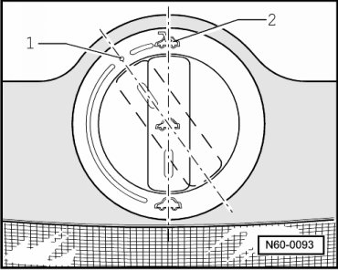

Sunroof With Glass Panel Overview
Sunroof with Glass Panel
Sunroof with Glass Panel Function
When ignition is switched on, the slide/tilt sunroof is opened and closed via the rotary knob, and is tilted out and closed by pressing and pulling.
After switching off ignition, slide/tilt sunroof can still be opened and closed until driver's or passenger's door is opened.
On the rotary knob, there are markings for preset tilt positions of the glass panel.
In switch position - 1 -, the opening of the slide/tilt sunroof in the so-called comfort position decreases driving wind noise which can occur at complete opening in switch position - 2 -.

The sunroof is equipped with a closing force limiter in area of window. When an obstruction is met during the closing sequence, the roof opens again by itself.
There is also an emergency closing function. If there are problems closing, the sunroof can be closed manually by pressing the preselector, which must be in the "sunroof closed" position.
For the emergency close function, the closing force limit is deactivated.
The sunroof drive motor is protected against overheating by a running time limiter. The locking mechanism activates after an uninterrupted operation of approximately. two minutes. Operation can only be resumed after a cool-down period.
If there is a malfunction in the electrical system, the sunroof motor can be moved using a hex wrench. There is a hex key wrench fitted on the inside of the interior light trim for this purpose.